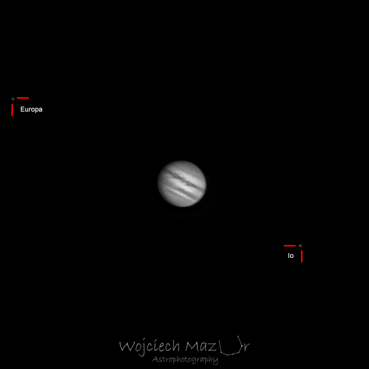

Jowisz jest największą i najcięższą planetą w naszym Układzie Słonecznym.

Jowisz jest ogromny. Jest on wielkości jednej dziesiątej promienia Słońca. Jego największy antycyklon (Wielka Czerwona Plama) jest niewiele większy od całej Ziemi!
Niestety na zdjęciu powyżej nie widać Wielkiej Czerwonej Plamy (znajduje się po nieoświetlonej stronie Jowisza), a samo zdjęcie jest czarno-białe, ponieważ kamerka którą zrobione zostało zdjęcie, nie rejestruje kolorów.
Za to widać 2 z księżycy Galileuszowych: Europa oraz Io. Pozostałe (Kallisto i Ganimedes) nie zmieściły się w kadrze.